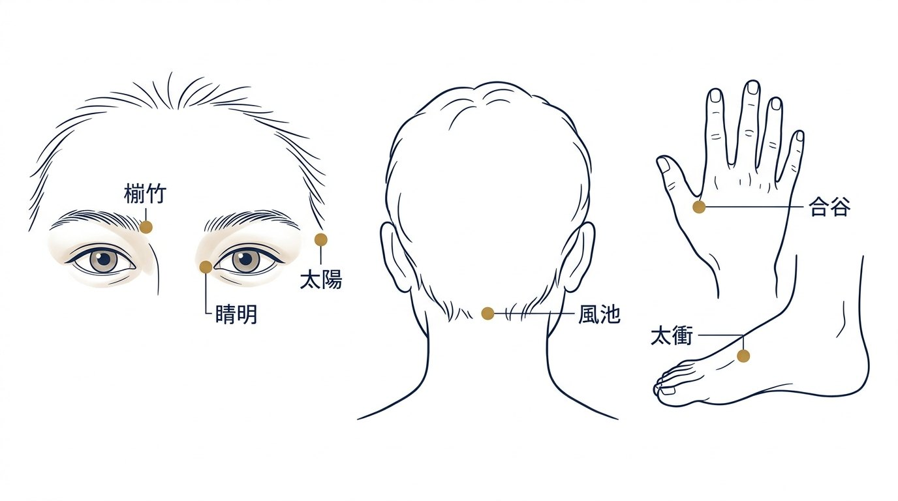

虹彩毛様体炎の鍼灸
虹彩と毛様体に炎症が起きる前部ぶどう膜炎です。急性期は緑内障予防のため眼科治療を最優先とし、安定期の体調管理を支えます。


院長YouTube解説・関連動画
虹彩毛様体炎は、虹彩と毛様体が炎症を起こす病気
虹彩毛様体炎は、虹彩と毛様体が炎症を起こす病気のことです。虹彩と毛様体が炎症を起こすと腫れたり充血したりします。
ぶどう膜の一部分に茶目と呼ばれる部分があります。茶目は眼をのぞいたときに見えるもので、虹彩は茶目と呼ばれる部分のことです。
虹彩から眼の奥につながっていく部分が毛様体です。このどちらかに炎症が起こる病気が虹彩毛様体炎なのです。
虹彩毛様体炎はぶどう膜炎の一種です。そのため、虹彩毛様体炎は前部ぶどう膜炎と呼ばれることもあります。
虹彩毛様体炎という病名は原因から付けられたものではなく、炎症の起こっている部位から付けられたものです。
虹彩毛様体炎は原因によって、細菌やウイルス、真菌などが原因で起きる感染性虹彩毛様体炎や、免疫反応が原因で起きる虹彩毛様体炎など色々な種類があります。
症状は、結膜の充血や視力の低下、目のかすみ、眼の痛みなど
虹彩毛様体炎の症状は、結膜の充血や目の赤みや違和感、視力の低下、目のかすみ、まぶしさ、眼の痛みなどです。
虹彩毛様体炎を発症すると、急に片眼や両眼の球結膜に充血が起こります。自覚症状としては、眼の痛みやまぶしさを感じる、見えにくくなる、眼のかすみなどです。
場合によっては、飛蚊症が現れたり合わせて白内障などの病気が起きたりすることもあります。
目の痛み: 虹彩毛様体炎は、しばしば目の痛みとして最初に現れます。これは、軽度から重度まで様々であり、しばしば急に発症します。
赤目: 目が赤くなることが一般的です。これは炎症の一症状であり、目の内部に炎症が起きている可能性を示します。
感光性: 光に対する過敏反応が起こり、特に強い日光や室内の明るい光が不快に感じます。
視力低下: 炎症が進行すると、視力が次第に低下していく可能性があります。
ぼやけた視界: 一部では、視界がぼやけると報告しています。
水ぶくれ、浮遊物: 視野内に小さな浮遊物が見える場合があります。
異物感: 目に何かが入っているような、不快な感覚がある場合があります。
涙の過剰な分泌: 痛みや不快感に対する反応として、涙が過剰に分泌されることがあります。
瞳孔の変化: 重症の場合、瞳孔の形が不規則になることがあります。
光弧症状: 光源を見た際に、虹色の光の弧が見える症状がある場合もあります。
虹彩毛様体炎の症状は一人一人異なる場合があり、複数の症状が同時に、または短期間で順番に現れることもあります。そのため、症状が軽度であっても、専門の医師に見てもらうことが大事です。
一部の症状は急激に現れることもあれば、長期間にわたって持続することもあります。
虹彩毛様体炎を改善するためには、主にステロイド剤や消炎鎮痛剤を使います。消炎鎮痛剤は、点眼や内服で使用します。
炎症が虹彩毛様体に限られている場合は、副腎皮質ステロイド薬の点眼をして改善を行うことが多いです。炎症が強い場合は、副腎皮質ステロイドを注射や内服で使うこともあります。
ステロイド点眼薬: 炎症を抑制するために一般的に処方されます。しかし、長期使用には副作用があるため、医師の指導が必要です。
非ステロイド性抗炎症薬（NSAIDs）: 炎症を抑える効果があり、ステロイドが適用できない場合などに用いられます。
抗生物質: 二次感染を防ぐために、時には抗生物質も併用されることがあります。
抗ウイルス薬: 感染が原因である場合は、抗ウイルス薬が用いられます。
免疫抑制薬: 重症の場合や再発を防ぐために、免疫を抑制する薬が処方されることもあります。
・眼内注射
ステロイドや抗炎症薬を直接眼内に注射する方法もあります。これは通常、重症の場合や他の改善法が効果を示さない場合に用いられます。
・外科手術
虹彩毛様体の切除: 重症の場合、炎症を起こしている虹彩や毛様体の一部を外科的に取り除くこともあります。
シクロデストラクション: 極端なケースでの最後の手段として、毛様体を破壊して炎症を抑える手術も行われることがあります。
・免疫調整
特に自己免疫に関わる病気が関与している場合、全身的な免疫調整が必要とされる場合があります。
・サポートケア
人工涙液: 目の乾燥を防ぐための人工涙液が用いられることがあります。
痛み管理: 痛みを和らげるための薬が用いられる場合もあります。
改善法は症状、全身状態、合併症などによって異なる可能性があります。
・非ステロイド性抗炎症薬
ケトロラック、フラーバプロフェン、インドメタシンなどの薬は、炎症を抑制するだけでなく痛みを軽減する効果もあります。ただし、胃腸障害や腎臓への影響があるため、医師の監修のもとで使用する必要があります。
・鎮痛剤
アセトアミノフェン、イブプロフェンなどの一般的な鎮痛剤も痛みを和らげるために用いられることがあります。これらは炎症を抑制するわけではありませんが、痛みをコントロールすることはできます。
・オピオイド鎮痛剤
非常に痛みが強い場合は、コデイン、モルヒネなどが短期間処方されることがあります。しかし、依存性があるため長期的な使用は推奨されません。
・局所麻酔剤
リドカイン、プロパラカインなどは極端な痛みに対して用いられる場合があります。これは通常、手術などを伴う場合に限られます。
アトロピンは、瞳孔を拡張することで、虹彩の動きを制限し、それによって痛みを減少させる目的で使用されることがあります。
非ステロイド性抗炎症薬（NSAIDs）
ケトロラック（Ketorolac）
フラーバプロフェン（Flurbiprofen）
インドメタシン（Indomethacin）
これらの薬は、炎症を抑制するだけでなく痛みを軽減する効果もあります。ただし、胃腸障害や腎臓への影響があるため、医師の監修のもとで使用する必要があります。
アセトアミノフェン（Tylenol）
イブプロフェン（Ibuprofen）
一般的な鎮痛剤も痛みを和らげるために用いられることがあります。これらは炎症を抑制するわけではありませんが、痛みをコントロールすることはできます。
オピオイド鎮痛剤
コデイン（Codeine）
モルヒネ（Morphine）
非常に強い痛みの場合、オピオイド鎮痛剤が短期間処方されることがあります。しかし、依存性があるため長期的な使用は推奨されません。
局所麻酔剤
リドカイン（Lidocaine）
プロパラカイン（Proparacaine）
極端な痛みに対しては、一時的に局所麻酔剤が用いられる場合があります。これは通常、手術などの医療行為を伴う場合に限られます。
アトロピン
瞳孔を拡張することで、虹彩の動きを制限し、それによって痛みを減少させる目的で使用されることがあります。
注意: 上記の薬物は全て医師の処方と指導が必要です。また、症状や持病、他に服用している薬などによっては、これらの薬が適していない場合もあります。したがって、専門医の診察を受けることが非常に重要です。
虹彩と水晶体がくっついてしまうことを防止するために散瞳薬の点眼も行います。
炎症をそのまま放っておいてしまうと、虹彩と水晶体がくっついて緑内障の原因になることがあります。自覚症状があるときは早めに眼科に行くことをお勧めします。
▼ 詳しく知りたい項目だけタップして開けます（全項目の医学解説を収録）
01. 原因とメカニズム
なぜ症状が起きるのか・鍼灸の作用機序を読む
▼
01. 原因とメカニズム
なぜ症状が起きるのか・鍼灸の作用機序を読む
虹彩毛様体炎は、ぶどう膜の前部にあたる虹彩（茶目）と毛様体に炎症が生じる「前部ぶどう膜炎」です。原因は特発性が多い一方、関節リウマチやベーチェット病・サルコイドーシスなどの自己免疫疾患、ヘルペスウイルスや結核・トキソプラズマ等の感染症、過度のストレスなどが関与します。炎症を放置すると虹彩と水晶体が癒着して続発緑内障や白内障を引き起こし視力喪失につながるため、眼科でのステロイド点眼や散瞳薬治療が最優先です。
なぜ鍼灸で改善へ向かうのか？（作用機序の図解）
虹彩毛様体炎に対する鍼灸は、後頸部〜眼周囲の微小循環と毛様体筋・自律神経調整機序を通じて、お体本来の回復力を引き出します。
眼球周囲の危険な深刺しを避け、風池・天柱・合谷・太衝など安全な経穴へ繊細に施術します。
PC・スマホ作業や緊張で固まった首深層筋と眼輪筋周囲の血流を促し、重だるさを軽減します。
交感神経優位による目の乾き・ピント調節疲労を鎮め、涙液分泌とリラックス反応を助けます。
眼科の点眼・定期検査を最優先としつつ、日々の眼精疲労や頭痛・肩こりの連鎖を整えます。
02. よくあるお悩み
このような症状はありませんか？（4項目）
▼
02. よくあるお悩み
このような症状はありませんか？（4項目）
- ✓目の奥がズキズキ痛み、白目が赤く充血している
- ✓室内の光や日光が異常にまぶしく感じる
- ✓視界がかすんだり、小さな浮遊物（飛蚊症）が見えたりする
- ✓自己免疫疾患や強いストレスをきっかけに再燃しやすい
03. 当院の施術アプローチ
施術の進め方・改善のポイントを見る
▼
03. 当院の施術アプローチ
施術の進め方・改善のポイントを見る
04. ツボ詳細・セルフケア一覧
緑内障・視神経ケアの眼周囲・全身血流ツボ図解（6穴）
▼
04. ツボ詳細・セルフケア一覧
緑内障・視神経ケアの眼周囲・全身血流ツボ図解（6穴）
実際の施術ではお一人おひとりの体質・症状に合わせて選穴しますが、緑内障・視神経萎縮・眼圧負担の眼科標準治療併用サポートの臨床でよく用いられる代表的なツボの目安です。
| ツボ名 | 位置の目安 | 主な狙い | セルフケアの注意点 |
|---|---|---|---|
| 攅竹（さんちく） | 眉頭の内側の小さなくぼみ | 眼輪筋・前頭筋の緊張緩和と眼周囲血流サポート | 眼球自体は絶対に圧迫しないよう骨の縁を優しく押します。 |
| 睛明（せいめい） | 目頭のやや上、鼻の付け根のくぼみ | 眼窩周囲の微小循環サポート | セルフでは強く押さず、専門施術に委ねる繊細な部位です。 |
| 太陽（たいよう） | こめかみのくぼみ（目尻と眉尻の中間後方） | 側頭部の緊張緩和・眼精疲労や頭痛の軽減 | 指の腹で円を描くように優しくほぐします。 |
| 風池（ふうち） | 後頭部の生え際のくぼみ | 視神経・後頭葉へつながる頭頸部血流のサポート | 首こりの解消が眼の疲れ軽減に直結します。 |
| 合谷（ごうこく） | 手の甲、親指と人差し指の間 | 眼周囲の緊張を遠隔から緩める基本穴 | 眼科の点眼治療・視野検査を必ず継続してください。 |
| 太衝（たいしょう） | 足の甲、親指と人差し指の骨の間 | 東洋医学で「目と深い関わり」を持つ肝経の調整穴 | 自律神経の緊張を鎮め、眼への負担を和らげます。 |
05. 医学的根拠・国際査読論文（PubMed / Cochrane）
科学的エビデンス・出典リンク一覧（4件）
▼
05. 医学的根拠・国際査読論文（PubMed / Cochrane）
科学的エビデンス・出典リンク一覧（4件）
国際的な医学データベース（PubMed・Cochrane等）で報告されている緑内障・視神経萎縮・眼圧負担の眼科標準治療併用サポート領域の代表的な査読済み鍼灸研究をまとめています（標準治療との併用や研究上の限界を含めて正確に掲載）。
| 年・研究デザイン | 対象・規模 | 主な結果 | 限界・出典 |
|---|---|---|---|
| 2024年 メタ解析 | ドライアイ 16試験（n=1,383：人工涙液併用） | BUT（SMD 1.25, P<0.0001）、シルマー試験（SMD 1.55, P<0.0001）、角膜染色・総有効率（OR 4.09）が有意改善。 | 自覚症状OSDIは有意差なし（P=0.15）。人工涙液との併用評価。 Medicine (PMID: 38181299) |
| 2019年 二重盲検RCT | ドライアイ 49名（米国・6か月追跡） | 実鍼群はOSDIスコアが1週〜6か月まで有意改善（6か月p<0.01）、乾燥感・充血も有意軽減。 | 小規模・客観的涙液指標（TBUT等）は有意差なし。 Clin Ophthalmol (PMID: 31114151) |
| 2020年 Cochraneレビュー | 緑内障・高眼圧症 3 RCTs（n=137） | 一時的な眼圧低下の報告はあるが8週時点で差消失、視力は有意差なし。 | 全試験が高バイアス・確実性非常に低。点眼治療の代替不可。 Cochrane (PMID: 32032457) |
| 2025年 メタ解析 | 変性眼疾患 21研究（緑内障・黄斑変性等） | 総有効率はOR 3.52（p<0.00001）だが、統合視力（p=0.50）・眼圧（p=0.11）に有意差なし。 | 非ランダム化研究含む。眼科標準管理下での補完研究段階。 Complement Ther Med (PMID: 40850524) |
参考文献・出典
- 2024年 メタ解析（ドライアイ 16試験（n=1,383：人工涙液併用））— Medicine (PMID: 38181299)
- 2019年 二重盲検RCT（ドライアイ 49名（米国・6か月追跡））— Clin Ophthalmol (PMID: 31114151)
- 2020年 Cochraneレビュー（緑内障・高眼圧症 3 RCTs（n=137））— Cochrane (PMID: 32032457)
- 2025年 メタ解析（変性眼疾患 21研究（緑内障・黄斑変性等））— Complement Ther Med (PMID: 40850524)
06. よくある質問（FAQ）
よくあるご質問を見る（2件）
▼
06. よくある質問（FAQ）
よくあるご質問を見る（2件）
Q. 目が赤くてまぶしく、かすみもあります。鍼灸で炎症を抑えられますか？
いいえ、虹彩毛様体炎の急性期は虹彩と水晶体の癒着による緑内障を防ぐため、速やかな眼科受診とステロイド・散瞳薬による治療が不可欠です。急性期は鍼灸禁忌です。
Q. 炎症が落ち着いている時期に気をつけることはありますか？
定期的な眼科検診を続けながら、過度のストレスや疲労を溜めない生活管理が大切です。安定期に主治医の許可があれば、体調管理の補完ケアとして鍼灸をご活用いただけます。
あわせて読まれる関連疾患（眼のお悩み）
片眼の外傷や手術後に健常眼にも自己免疫性炎症が生じる重篤疾患です。眼科治療最優先で安定期の補完ケアを支えます。
角膜にアミロイドが沈着し強いまぶしさや異物感が生じる指定難病です。眼科治療最優先で安定期の疲労や首肩こりを支えます。
片眼に発作的な眼圧上昇と軽度の炎症を繰り返す続発緑内障です。発作時は眼科治療が必須で、寛解期の体調管理を支えます。
メラニン色素合成に関わる遺伝子変異による指定難病です。専門医管理と紫外線対策を最優先とし、安定期の眼精疲労等をケアします。
外傷や角膜潰瘍の治癒過程で結膜組織が角膜に入り込む状態です。眼科での管理を基本とし、安定期の眼精疲労や首肩こりをケアします。
鼻側の結膜組織が角膜へ伸びてくる良性の変化です。眼科での経過観察や手術を基本とし、鍼灸で眼精疲労や首肩の緊張をケアします。
CLINICAL RECOVERY CASES
✨ 実際の臨床改善事例・回復経過を見る
銀座本院をはじめ各院での実際の改善事例を症状別に絞り込んでご確認いただけます。
おひとりで悩まず、まずはご相談ください
銀座本院・川口・大宮・横浜・博多・田無の各院でご予約を承っております。